Ingeniero de Sistemas de la Universidad del Valle. Especializado en arquitectura de software distribuido, pipelines de datos, microservicios cloud y desarrollo de agentes autónomos con Inteligencia Artificial.
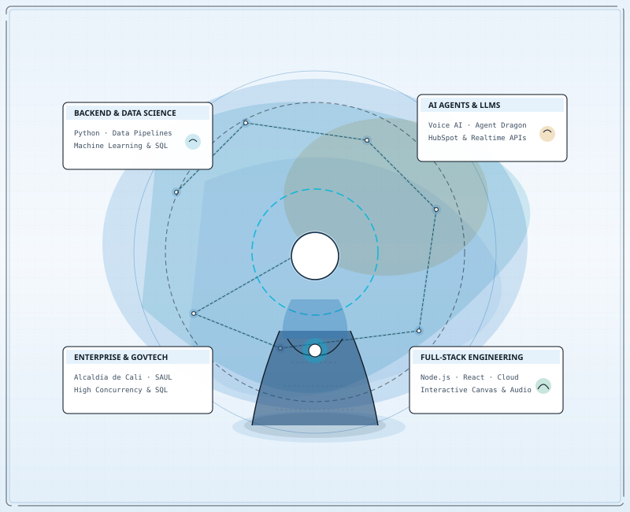
Una experiencia visual a través de cada era técnica: desde los fundamentos algorítmicos hasta la computación en la nube, machine learning y agentes de voz.
Formación rigurosa en Ingeniería de Sistemas en la Universidad del Valle...
Evidencia visual de productos y plataformas construidas, desplegadas en producción y probadas en el mundo real.
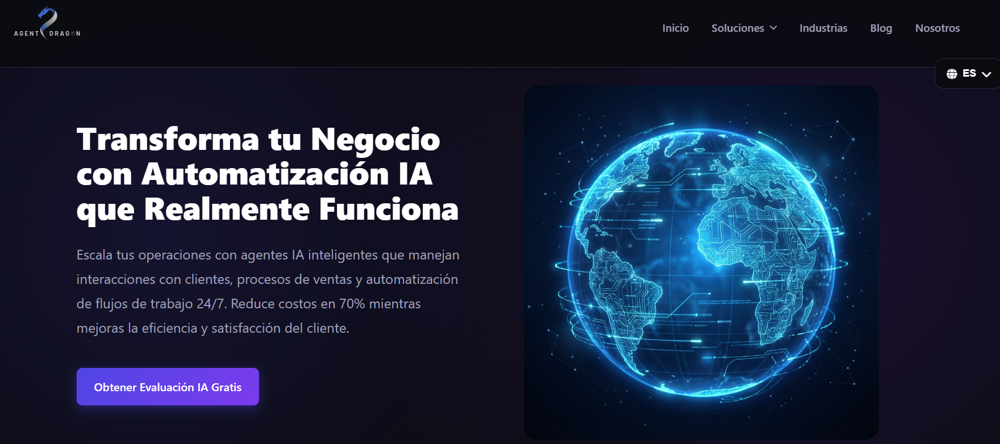
Plataforma integral de agentes autónomos de voz para atención interactiva, síntesis acústica en tiempo real y flujos automatizados.
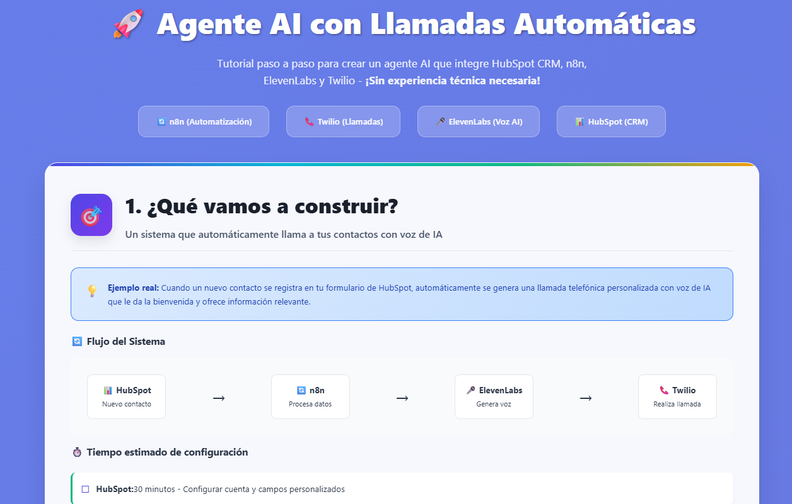
Pipeline de prospección telefónica con sincronización en tiempo real de leads, transcripciones automáticas y métricas conversacionales.
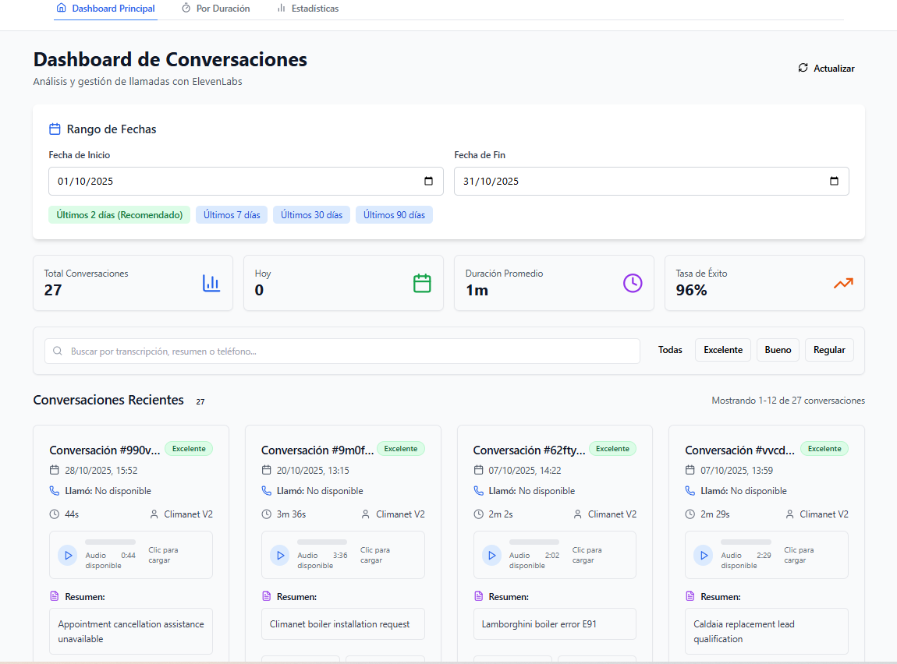
Dashboard analítico para evaluación de sentimiento, extracción de entidades y clasificación de intención en llamadas generadas por IA.
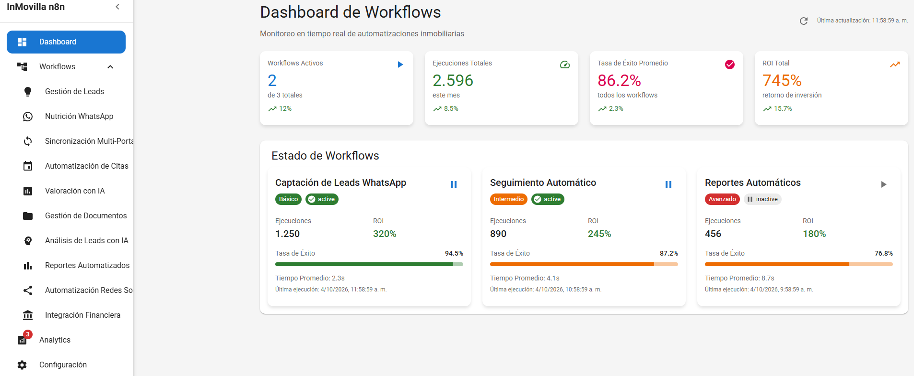
Modelo de priorización y calificación algorítmica de prospectos comerciales según engagement y atributos de conversión.
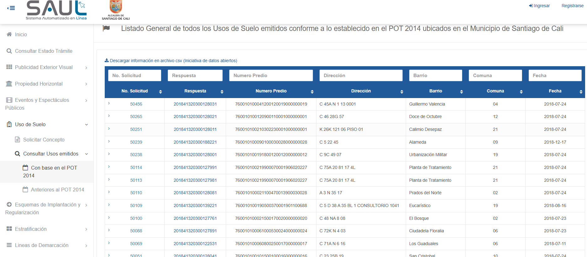
Plataforma gubernamental de atención ciudadana que unificó trámites territoriales, reduciendo los tiempos de atención en más del 70%.
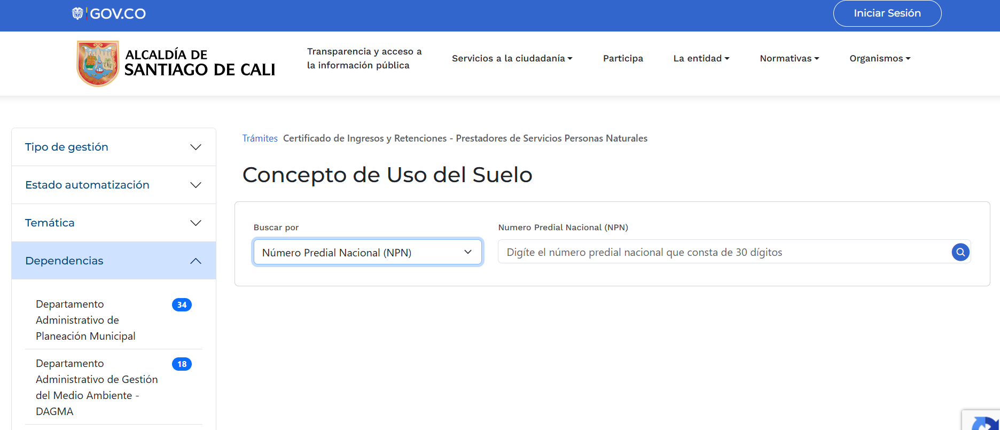
Motor automatizado para validaciones catastrales y emisión de conceptos urbanísticos según normatividad POT vigente.
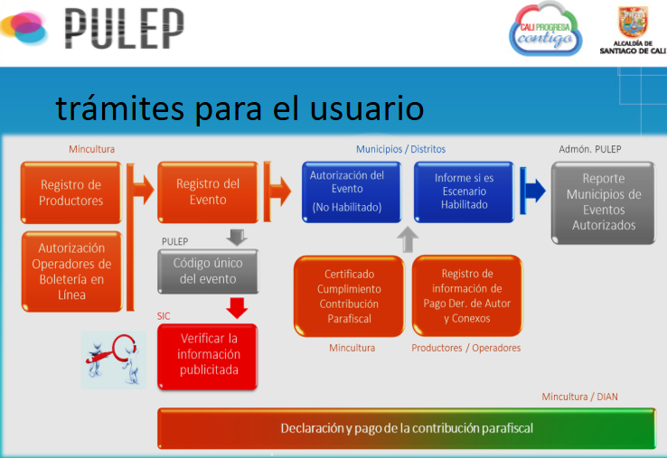
Sistema interinstitucional para revisión de planes de contingencia, aforos y permisos entre bomberos, policía y gestión del riesgo.
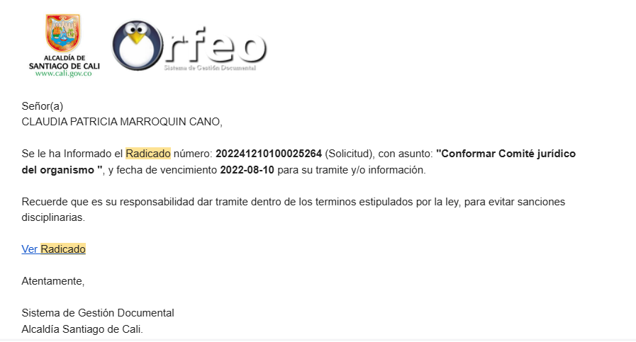
Digitalización y custodia de expedientes oficiales, trazabilidad de radicados y firma electrónica de alta seguridad.
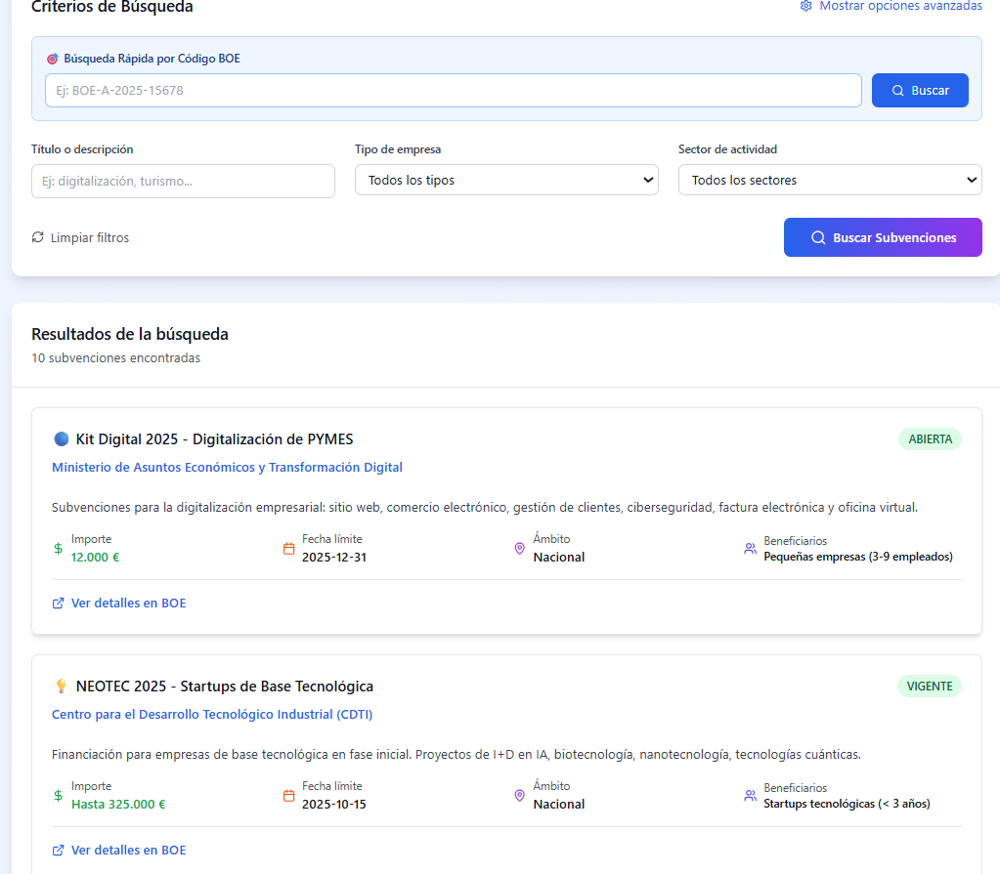
Plataforma para convocatorias públicas, calificación algorítmica y control presupuestal de estímulos culturales y deportivos.
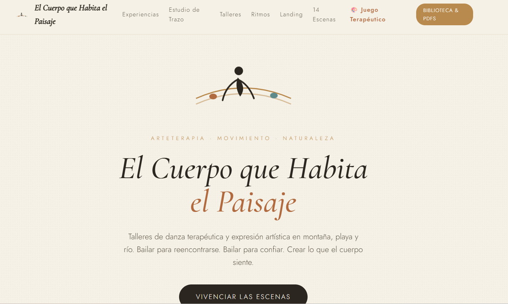
Experiencia interactiva en canvas digital para exploración emocional, respiración consciente y expresión plástica en acuarela.
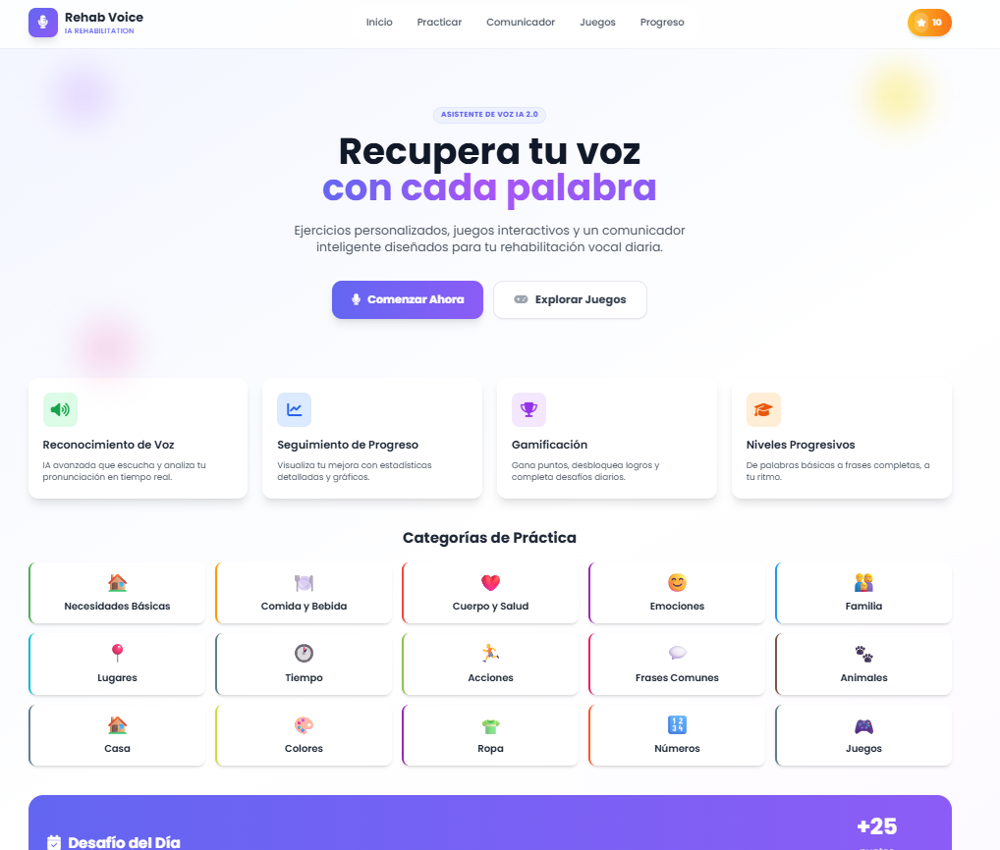
Software clínico para terapia vocal fonoaudiológica con visualización de frecuencia fundamental, control de intensidad y ejercicios lúdicos.
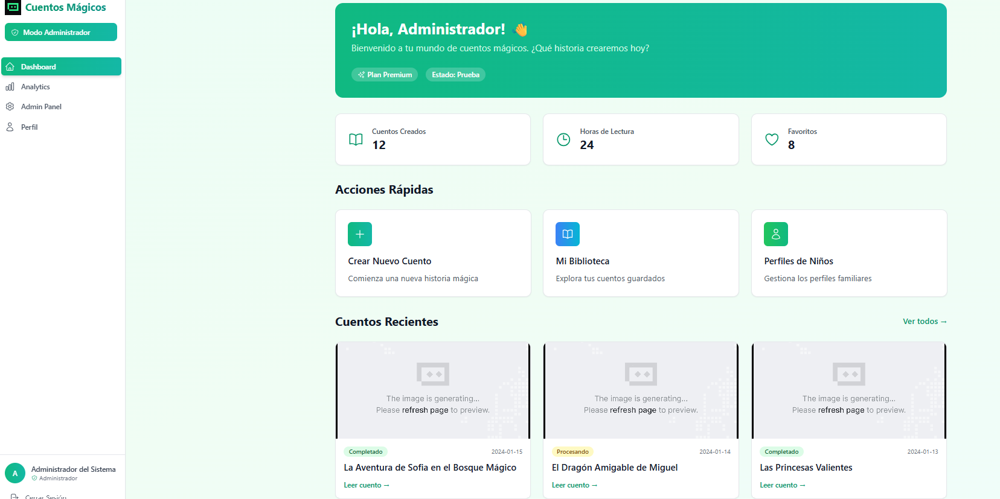
Motor generativo que compone cuentos personalizados e ilustraciones interactivas para fomentar la lectura y la creatividad temprana.
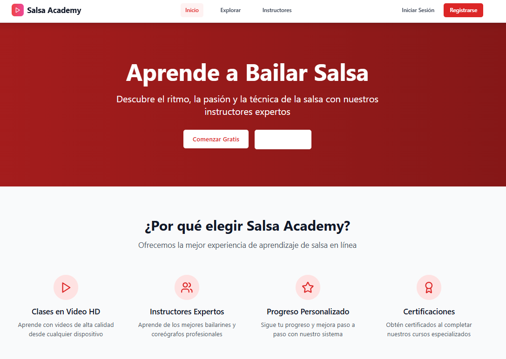
Plataforma interactiva para la enseñanza del compás rítmico y la reconexión motora a través del baile y la música afroantillana.
Integración de ingeniería de software robusta, arquitecturas distribuidas y modelos de datos avanzados.
Arquitectura y desarrollo de APIs escalables, servicios distribuidos y motores de procesamiento de alta concurrencia.
Modelado de datos, análisis predictivo, optimización de consultas SQL complejas y pipelines ETL en tiempo real.
Desarrollo de agentes inteligentes, integración de LLMs, arquitecturas RAG y telefonía de voz en tiempo real.
Desarrollo integral de frontend interactivo, despliegue en infraestructura cloud de AWS y contenedorización.
Disponible para roles como Senior Full-Stack & Backend Engineer o Data Scientist en proyectos de alto impacto.